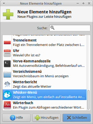
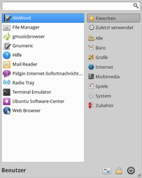
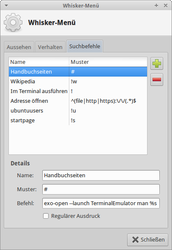

Whisker Menu
Dieser Artikel wurde für die folgenden Ubuntu-Versionen getestet:
Ubuntu 16.04 Xenial Xerus
Ubuntu 14.04 Trusty Tahr
Zum Verständnis dieses Artikels sind folgende Seiten hilfreich:
Whisker Menu  ist ein alternatives Startmenü für Xfce. Es besticht durch seine Schlichtheit und bietet die von anderen Startmenüs gewohnten Standardfunktionen wie die Anzeige der zuletzt genutzten Programme und eine gegliederte Übersicht der installierten Anwendungen. Wer dennoch den Überblick verliert, kann eine Suchfunktion nutzen, um installierte Programme aufzuspüren.
ist ein alternatives Startmenü für Xfce. Es besticht durch seine Schlichtheit und bietet die von anderen Startmenüs gewohnten Standardfunktionen wie die Anzeige der zuletzt genutzten Programme und eine gegliederte Übersicht der installierten Anwendungen. Wer dennoch den Überblick verliert, kann eine Suchfunktion nutzen, um installierte Programme aufzuspüren.
Installation¶
 Das Programm ist ab Ubuntu 14.04 in den offiziellen Paketquellen enthalten und gehört zur Standardinstallation von Xubuntu. Ansonsten kann es einfach nachinstalliert [1] werden:
Das Programm ist ab Ubuntu 14.04 in den offiziellen Paketquellen enthalten und gehört zur Standardinstallation von Xubuntu. Ansonsten kann es einfach nachinstalliert [1] werden:
xfce4-whiskermenu-plugin (universe)
 mit apturl
mit apturl
Paketliste zum Kopieren:
sudo apt-get install xfce4-whiskermenu-plugin
sudo aptitude install xfce4-whiskermenu-plugin
PPA¶
Das "Personal Packages Archiv" (PPA) [2] des Entwicklers Graeme Gott enthält die jeweils aktuellste Version und unterstützt auch ältere Ubuntu-Versionen.
Adresszeile zum Hinzufügen des PPAs:
ppa:gottcode/gcppa
Hinweis!
Zusätzliche Fremdquellen können das System gefährden.
Ein PPA unterstützt nicht zwangsläufig alle Ubuntu-Versionen. Weitere Informationen sind der  PPA-Beschreibung des Eigentümers/Teams gottcode zu entnehmen.
PPA-Beschreibung des Eigentümers/Teams gottcode zu entnehmen.
Damit Pakete aus dem PPA genutzt werden können, müssen die Paketquellen neu eingelesen werden.
Nach dem Aktualisieren der Paketquellen erfolgt die Installation wie oben angegeben.
Verwendung¶
Nach erfolgreicher Installation kann das Programm zum Xfce-Panel hinzugefügt werden [3]. Möchte man noch Feineinstellungen am Aussehen vornehmen, klickt man das neue  Startmenü mit der rechte Maustaste
Startmenü mit der rechte Maustaste  an. Da zwei Startmenüs nicht wirklich sinnvoll sind, kann anschließend das klassische
an. Da zwei Startmenüs nicht wirklich sinnvoll sind, kann anschließend das klassische  Xfce-Startmenü aus dem Panel entfernt werden.
Xfce-Startmenü aus dem Panel entfernt werden.
|  |
| Zum Panel hinzufügen |
|  |
| Whisker Menu |
| Programmsuche |
| Angepasste Optik |
Gestartet wird ein Programm wie üblich mit einem Linksklick  . Über einen Rechtsklick auf den Programmnamen in der linken Spalte kann eine Anwendung zu den Favoriten, dem Desktop oder zum Panel hinzugefügt werden. Am unteren Rand des Menüfensters stehen rechts neben dem Benutzernamen folgende Aktionen bereit:
. Über einen Rechtsklick auf den Programmnamen in der linken Spalte kann eine Anwendung zu den Favoriten, dem Desktop oder zum Panel hinzugefügt werden. Am unteren Rand des Menüfensters stehen rechts neben dem Benutzernamen folgende Aktionen bereit:
| Aktionen | ||
| Symbol | Text | Beschreibung |
 | "Alle Einstellungen" | Öffnet den Einstellungsmanager von Xfce |
| "Bildschirm sperren" | Den Bildschirmschoner aufrufen | |
| "Abmelden" | Öffnet den Abmeldedialog von Xfce | |
Konfiguration¶
| Aussehen |
| Verhalten |
|  |
| Suchbefehle |
Suche erweitern¶
Mit einem Rechtsklick auf das Startmenü gelangt man über "Eigenschaften → Suchbefehle" zur Konfigurationsmöglichkeit der Suchleiste. Diese bietet in der Grundausstattung unter anderem die Möglichkeit, Manpages aufzurufen und Programme im Terminal zu starten. Über die Schaltfläche  können weitere Quellen ergänzt werden.
können weitere Quellen ergänzt werden.
| Suche | |||
| Name | Suchmuster | Syntax | Link |
startpage | !s | exo-open --launch WebBrowser https://startpage.com/do/search?query=%u | startpage.com |
ubuntuusers | !u | exo-open --launch WebBrowser https://startpage.com/do/search?query=site:ubuntuusers.de %u | startpage.com |
Wikipedia | !w | exo-open --launch WebBrowser http://de.wikipedia.org/wiki/%u | Wikipedia |
Optik¶
Das Menü kann individuell angepasst werden. Zum einen können GTK-Designs (Themes) verwendet werden, welche das Whisker Menu bereits unterstützen (dazu muss whiskermenu-window enthalten sein). Diese können z.B. bei xfce-look.org gefunden werden.
Alternativ die Datei ~/.gtkrc-2.0 mit einem Editor [4] anlegen (falls nicht vorhanden) und diesen Inhalt hinzufügen:
style "darkback"
{
bg[NORMAL] = "#2d2d2d"
bg[ACTIVE] = "#606060"
bg[PRELIGHT] = "#808080"
fg[NORMAL] = "#ccc"
fg[ACTIVE] = "#fff"
fg[PRELIGHT] = "#fff"
}
widget "whiskermenu-window*" style "darkback"
Die Hex-Werte für die Farbinformationen können nach dem eigenen ästhetischen Empfinden für alle Zustände gesetzt werden. Änderungen unter bg wirken sich auf den Menühintergrund, fg auf die Schriftfarbe aus.
Für eine zusätzliche Änderung der Menüeinträge die folgenden Zeilen ergänzen:
style "darktree"
{
base[NORMAL] = "#404040"
base[ACTIVE] = "#606060"
text[NORMAL] = "#ccc"
text[ACTIVE] = "#fff"
}
widget "whiskermenu-window*TreeView*" style "darktree"
Über base wird die Farbe des Menühintergrundes definiert und mit text die Schriftfarbe festgelegt.
Um die Suchleiste ebenfalls anzupassen, muss man die folgenden Zeilen ergänzen:
style "darksearch"
{
base[NORMAL] = "#404040"
text[NORMAL] = "#ccc"
}
widget "whiskermenu-window*GtkEntry*" style "darksearch"Hinweis:
Das neue Design steht erst zur Verfügung, wenn man sich ab- und wieder neu anmeldet.
Problembehebung¶
Suche nach Dateien¶
Die im Whisker Menu integrierte Suche kann nur innerhalb der installierten Programme suchen. Benötigt man Vorschläge zu Programmen, die nicht installiert sind, bieten sich Paketverwaltungen wie z.B. das Software-Center oder Synaptic an. Wer dagegen nach Dateien suchen möchte, gibt unter Xubuntu catfish in das Suchfeld ein und startet die dazugehörige Anwendung Catfish.
Systemprogramme¶
Viele Programme, beim klassischen Xfce-Menü früher unter dem Menüpunkt "System" zusammengefasst wurden und die meist Root-Rechte benötigen, werden automatisch der Schaltfläche "Alle Einstellungen" zugeordnet (1310264). Dort sollte man weitersuchen, wenn das gewünschte Programm unter "System" oder über die Suche nicht zu finden ist.
Tastenkürzel¶
Hinweis:
Um ein Tastenkürzel zuzuweisen, wird die Version 1.1.0 oder neuer benötigt.
Das Xubuntu-Startmenü lässt sich alternativ über die Tastenkombination
Strg +
Esc öffnen. Möchte man dieses (oder ein anderes) Tastenkürzel dem Whisker Menu zuweisen, öffnet man den Xfce-Einstellungsmanager, dann "Tastatur -> Tastenkürzel für Anwendungen" und gibt als Befehl xfce4-popup-whiskermenu ein. Anschließend bestätigt man mit "Ok" und drückt die gewünschten Tasten.
Wer irgendwann zum klassischen Xfce-Startmenü zurück kehren möchte: hier lautet der Befehl xfce4-popup-applicationsmenu.
Ausführen¶
Möchte man ein Programm starten, das nicht im Startmenü vorhanden, aber dessen Name bekannt ist, sei auf die Tastenkombination Alt + F2 verwiesen (siehe Programme starten).
Systemweite Nutzung¶
Wenn Whisker Menu für alle Benutzern vorgegeben werden soll, bearbeitet man die Datei /etc/xdg/xdg-xubuntu/xfce4/panel/default.xml mit Root-Rechten und ersetzt die Zeile
<property name="plugin-1" type="string" value="applicationsmenu">
mit
<property name="plugin-1" type="string" value="whiskermenu">
Ubuntu 12.04 mit Xfce 4.10¶
Wer die in Xubuntu 12.04 enthaltene Xfce-Version 4.8 manuell auf 4.10 aktualisiert hat, benötigt zur Installation ein anderes PPA . Einfacher ist der folgende Befehl (Grundlage ist die Installation aus dem PPA des Programmautors, siehe oben):
32-bit-Systeme:
sudo ln -s /usr/lib/i386-linux-gnu/libxfce4panel-1.0.so.4.0.0 /usr/lib/i386-linux-gnu/libxfce4panel-1.0.so.3
64-bit-Systeme:
sudo ln -s /usr/lib/x86_64-linux-gnu/libxfce4panel-1.0.so.4.0.0 /usr/lib/x86_64-linux-gnu/libxfce4panel-1.0.so.3
 Übersichtsartikel
Übersichtsartikel- Erstellt mit Inyoka
-
 2004 – 2017 ubuntuusers.de • Einige Rechte vorbehalten
2004 – 2017 ubuntuusers.de • Einige Rechte vorbehalten
Lizenz • Kontakt • Datenschutz • Impressum • Serverstatus -
Serverhousing gespendet von